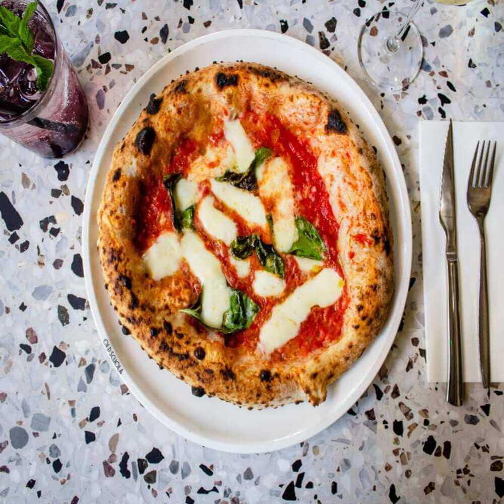

What you will be making!



Neapolitan pizza, or pizza Napoletana, is a type of pizza that originated in Naples, Italy. This style of pizza is prepared with simple and fresh ingredients: a basic dough, raw tomatoes, fresh mozzarella cheese, fresh basil, and olive oil. No fancy toppings are allowed!
One of its defining characteristics is that there is often more sauce than cheese. This leaves the middle of the pie wet or soggy and not conducive to being served by the slice. Because of this, Neapolitan pizzas are generally pretty small (about 10 to 12 inches), making them closer to the size of a personal pizza.
Neapolitan pizzas are also cooked at very high temperatures (800 F to 900 F) for no more than 90 seconds.
Pizza as we know it today (dough topped with tomatoes and cheese) was invented in Naples. Before the 1700s, flatbreads existed but were never topped with tomatoes, which is now a defining characteristic of pizza.
Baker Raffaele Esposito, who worked at the Naples pizzeria “Pietro... e basta così,” is generally credited with creating Margherita pizza. In 1889, King Umberto I and Queen Margherita of Savoy visited Naples. Esposito baked them a pizza named in honor of the queen whose colors mirrored those of the Italian flag: red (tomatoes), white (mozzarella), and green (basil leaves). This is what is now known as the classic Neapolitan pizza today.
The official requirements of an authentic Neapolitan pizza begin with the crust. The dough must be made with highly refined Italian type 0 or 00 wheat flour, Neapolitan or fresh brewer’s yeast (not dry yeast), water, and salt. It must be kneaded by hand or with a low-speed mixer and formed by hand, without the help of a rolling pin.
The dough is topped with raw, pureed San Marzano tomatoes from Italy. It can use only two types of mozzarella cheese. One is fior di latte made from cow’s milk and the other is mozzarella di Bufala, made from water buffalo milk, typically raised in the Campania and Lazio marshlands in Italy. Finally, Neapolitan pizza is topped off with fresh basil and extra-virgin olive oil. The ingredients must be all-natural and fresh.
The pizza is baked for 60 to 90 seconds (baking time cannot exceed 90 seconds) in a minimum 800 F stone oven with a wood fire.
1. Pour in water in a clean bowl and add the salt.
2. Mix it well because you need to disolve the salt completely.
3.Add 10% flour to the water and mix it through with your hands until the flour dissolves. This will result in a crepe/pancake consistency.
4. Next, add the yeast to the mix.
5. Mix in the rest of the flour.
6. Knead the dough for 10 to 15 minutes.
7. Form the doughball and cover it with a damp towel and let it rest for 2hr.
8. Once 2hr have passed, it is tame to make your dough balls. Cut the piece of dough and make sure that they are all the same weight.
9. Place the dough balls in a flat surface air tight container and ferment them from 6 to 8 hr on room temperature, or 24hr on 16°C - 18°C.
10. The dough balls are ready and you can make pizza now!
It is important to use flour with high protein content because that way the flour can absorb a lot of water, and the more water you use the better the pizza. Typically in Italy they use Tipo 00 flour but it is very hard to find in local stores, good substitute is just a regular bread flour with 12 to 14% protein content.
Pizza dough calculator assumes that you are using Tipo 00 flour so in that case you do not need to make any changes. In case of you using different kind of flour try lowering down the water content to about 55% - 60%.
Salt adds flavor to the dough, but it also protects the dough against the effects of harmful bacteria and it also strengthens the gluten structure within the dough. Try using sea salt or kosher salt instead of table salt because table salt is highly processed.
We put so little yeast in this dough because it is supposed to have a long fermentation process. That way we can develop more air, dough will be easier to work with and the pizza will also be easier to digest.